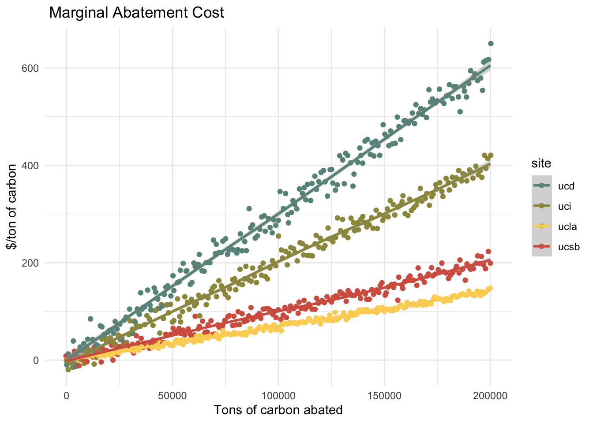

In this homework you will be simulating alternative approaches for reducing carbon emissions among four UC campuses (UCSB, UCLA, UCI, and UCD). The dataset for this assignment is available in the file “CarbonUC.csv”, available on Canvas. The dataset contains estimates of the marginal cost of reducing carbon emission for each campus for different levels of abatement (in tons of carbon). A few notes: ● Current (i.e. baseline) emission for each campus are: UCSB = 90,000 tons, UCLA = 250,000 tons, UCI = 100,000 tons, UCD = 160,000 tons. ● Prices are in $/ton and quantities are in tons of CO2. ● Before opening R, I recommend drawing graphs by hand to make sure you know what you want to do Please answer the following questions: ## Change value_to = ‘mc’
Rows: 201 Columns: 5
── Column specification ────────────────────────────────────────────────────────
Delimiter: ","
dbl (5): Abatement, UCSB, UCLA, UCI, UCD
ℹ Use `spec()` to retrieve the full column specification for this data.
ℹ Specify the column types or set `show_col_types = FALSE` to quiet this message.
#define baseline emissions (all in tons)ucsb_baseline =90000ucla_baseline =250000uci_baseline =100000ucd_baseline =160000
For each campus, plot the marginal abatement cost data and estimate a linear regression model with zero intercept.1 These estimated linear regressions will be your estimates of the marginal abatement cost curve for each campus, which you will use for the remainder of this analysis. Write the equation for the marginal abatement cost curve for each campus.
#plot marginal abatement curvesplot_1 =ggplot(emissions, aes(x = abatement, y = reduction, color = site)) +geom_jitter() +geom_smooth() +#geom_abline(slope = ucsb_slope)+scale_colour_manual(values =c("#679289","#9C964A","#FDD262","#D6604D"))+labs(title =" Marginal Abatement Cost", y ="$/ton of carbon", x ="Tons of carbon abated") +theme_minimal() plot_1
`geom_smooth()` using method = 'loess' and formula = 'y ~ x'

#filter data by site, estimate linear regression models with a forced 0 intercept, and extract slopes from lmsucsb_df = emissions %>%filter(site =="ucsb")ucsb_lm =lm(reduction ~0+ abatement, data = ucsb_df) ucsb_slope = ucsb_lm$coefficient[1] %>%as.numeric()ucla_df = emissions %>%filter(site =="ucla")ucla_lm =lm(reduction ~0+ abatement, data = ucla_df) ucla_slope = ucla_lm$coefficient[1] %>%as.numeric()uci_df = emissions %>%filter(site =="uci")uci_lm =lm(reduction ~0+ abatement, data = uci_df) uci_slope = uci_lm$coefficient[1] %>%as.numeric()ucd_df = emissions %>%filter(site =="ucd")ucd_lm =lm(reduction ~0+ abatement, data = ucd_df) ucd_slope = ucd_lm$coefficient[1] %>%as.numeric()#add baselines and slopes to full dfemissions_mod = emissions %>%mutate(baseline =case_when( site =='ucsb'~ ucsb_baseline, site =='ucla'~ ucla_baseline, site =='uci'~ uci_baseline, site =='ucd'~ ucd_baseline),slope =case_when( site =='ucsb'~ ucsb_slope, site =='ucla'~ ucla_slope, site =='uci'~ uci_slope, site =='ucd'~ ucd_slope))#write out the MAC curve equationsequatiomatic::extract_eq(ucsb_lm, use_coefs =TRUE, coef_digits =8)
Using your estimated marginal abatement cost curves, together with the baseline emissions, derive each campus’ demand curve for carbon. In other words, how much would each campus be willing to pay to emit the first ton of carbon, the second ton of carbon, etc. 2 Plot each campus’ demand curve for emissions on a single graph. Which campus is willing to pay the most for the first ton of carbon emissions?
UCD is willing to pay the most for the first ton of carbon emissions.
#define generic demand functioncompute_demand_P =function(slope, baseline, emissions){ demand = slope*(baseline - emissions)return(demand)}#apply demand function and save results in main dfemissions_mod = emissions_mod %>%mutate(demand =compute_demand_P(slope, baseline, abatement))#create linear models of demand (not necessary)ucsb_d_df = emissions_mod %>%filter(site =="ucsb")ucsb_d_lm <-lm(demand ~ abatement, data = ucsb_d_df)ucla_d_df = emissions_mod %>%filter(site =="ucla")ucla_d_lm <-lm(demand ~ abatement, data = ucla_d_df)uci_d_df = emissions_mod %>%filter(site =="uci")uci_d_lm <-lm(demand ~ abatement, data = uci_d_df)ucd_d_df = emissions_mod %>%filter(site =="ucd")ucd_d_lm <-lm(demand ~ abatement, data = ucd_d_df)#write out the demand equationsequatiomatic::extract_eq(ucsb_d_lm, use_coefs =TRUE, coef_digits =8)
Warning in summary.lm(x): essentially perfect fit: summary may be unreliable
#plot demand curve for all sitesplot_2 =ggplot(emissions_mod, aes(x = abatement, y = demand, color = site)) +geom_line(size =1)+scale_colour_manual(values =c("#679289","#9C964A","#FDD262","#D6604D"))+labs(x ="Pollution (tons of CO2)", y ="Demand", color ="Site") +theme_minimal() +theme()+ylim(0,500)
Warning: Using `size` aesthetic for lines was deprecated in ggplot2 3.4.0.
ℹ Please use `linewidth` instead.
Here you will analyze three alternative interventions for reducing carbon emissions across these four campuses. Please answer the questions about each intervention listed below.
Intervention #1: Carbon Tax: Each campus must pay a tax of $50/ton for each ton of emissions. How much would each campus choose to emit? How much would each campus abate? What is the total amount of emissions across all four campuses? How much tax revenue is generated?
#define generic function to calculate demand Qcompute_demand_Q =function(slope, baseline, price){ Q = baseline - ((price)/(slope))return(Q)}#define generic function to calculate abatement Qcompute_abatement_Q =function(baseline, emit_Q){ abatement_Q = baseline - emit_Qreturn(abatement_Q)}ucsb_emit_Q =compute_demand_Q(ucsb_slope, ucsb_baseline, price =50)ucsb_abate_Q =compute_abatement_Q(ucsb_baseline, ucsb_emit_Q)results =paste0("Under intervention #1 (carbon tax), UCSB will emit " , ucsb_emit_Q, " tons of carbon and abate ", ucsb_abate_Q, " tons of carbon.")print(results)
[1] "Under intervention #1 (carbon tax), UCSB will emit 40209.1909084787 tons of carbon and abate 49790.8090915213 tons of carbon."
ucla_emit_Q =compute_demand_Q(ucla_slope, ucla_baseline, price =50)ucla_abate_Q =compute_abatement_Q(ucla_baseline, ucla_emit_Q)results =paste0("Under intervention #1 (carbon tax), UCLA will emit " , ucla_emit_Q, " tons of carbon and abate ", ucla_abate_Q, " tons of carbon.")print(results)
[1] "Under intervention #1 (carbon tax), UCLA will emit 178717.531983001 tons of carbon and abate 71282.4680169989 tons of carbon."
ucd_emit_Q =compute_demand_Q(ucd_slope, ucd_baseline, price =50)ucd_abate_Q =compute_abatement_Q(ucd_baseline, ucd_emit_Q)results =paste0("Under intervention #1 (carbon tax), UCD will emit " , ucd_emit_Q, " tons of carbon and abate ", ucd_abate_Q, " tons of carbon.")print(results)
[1] "Under intervention #1 (carbon tax), UCD will emit 143466.384978117 tons of carbon and abate 16533.6150218829 tons of carbon."
uci_emit_Q =compute_demand_Q(uci_slope, uci_baseline, price =50)uci_abate_Q =compute_abatement_Q(uci_baseline, uci_emit_Q)results =paste0("Under intervention #1 (carbon tax), UCI will emit " , uci_emit_Q, " tons of carbon and abate ", uci_abate_Q, " tons of carbon.")print(results)
[1] "Under intervention #1 (carbon tax), UCI will emit 75096.2390467848 tons of carbon and abate 24903.7609532152 tons of carbon."
total_emitted = ucsb_emit_Q + ucla_emit_Q + uci_emit_Q + ucd_emit_Qtotal_revenue = total_emitted*50results =paste0("Under intervention #1 (carbon tax), the four campuses will emit a total of " , total_emitted, " tons of carbon and generate $", total_revenue, " in tax revenue.")print(results)
[1] "Under intervention #1 (carbon tax), the four campuses will emit a total of 437489.346916382 tons of carbon and generate $21874467.3458191 in tax revenue."
Intervention #2: Carbon Ban: Carbon emissions are banned at each campus. What is the total cost of this ban to each campus?
#supply curves from the lm are now:ucsb_mac =function(Q){ P = ucsb_slope*Qreturn(P)}ucla_mac =function(Q){ P = ucla_slope*Qreturn(P)}ucd_mac =function(Q){ P = ucd_slope*Qreturn(P)}uci_mac =function(Q){ P = uci_slope*Qreturn(P)}ucsb_ban_P =abs(integral(f = ucsb_mac, xmin = ucsb_baseline, xmax =0))ucla_ban_P =abs(integral(f = ucla_mac, xmin = ucla_baseline, xmax =0))ucd_ban_P =abs(integral(f = ucd_mac, xmin = ucd_baseline, xmax =0))uci_ban_P =abs(integral(f = uci_mac, xmin = uci_baseline, xmax =0))total_ban_P =sum(ucsb_ban_P, ucla_ban_P, ucd_ban_P, uci_ban_P)results =paste0("Intervention #2 (carbon ban) will cost $", ucsb_ban_P," at UCSB, $", ucla_ban_P, " at UCLA, $", ucd_ban_P, " at UCD, and $", uci_ban_P, "at UCI. The total cost to all four campuses is $", total_ban_P, ".")print(results)
[1] "Intervention #2 (carbon ban) will cost $4067015.6539891 at UCSB, $21919835.8792429 at UCLA, $38709017.9100539 at UCD, and $10038644.3826559at UCI. The total cost to all four campuses is $74734513.8259418."
Intervention #3: Cap without Trade: Each campus is capped at 100,000 tons of carbon. How much abatement would be required by each campus to comply with this cap? What is the marginal cost of the last unit of abatement for each campus? What is the total cost of abatement for each campus to comply with this new cap?
#How much abatement would be required by each campus to comply with this cap?#apply generic function from above to calculate abatement Q cap_Q =100000ucsb_abate_Q2 =max(0,compute_abatement_Q(ucsb_baseline, cap_Q))ucla_abate_Q2 =max(0,compute_abatement_Q(ucla_baseline, cap_Q))ucd_abate_Q2 =max(0,compute_abatement_Q(ucd_baseline, cap_Q))uci_abate_Q2 =max(0,compute_abatement_Q(uci_baseline, cap_Q))results =paste0("Under intervention #3 (cap without trade), UCSB will abate ", ucsb_abate_Q2, ", UCLA will abate ", ucla_abate_Q2, ", UCD will abate ", ucd_abate_Q2, ", and UCI will abate ", uci_abate_Q2,".")print(results)
[1] "Under intervention #3 (cap without trade), UCSB will abate 0, UCLA will abate 150000, UCD will abate 60000, and UCI will abate 0."
#What is the marginal cost of the last unit of abatement for each campus?ucsb_cap_P =ucsb_mac(ucsb_abate_Q2)ucla_cap_P =ucla_mac(ucla_abate_Q2)ucd_cap_P =ucd_mac(ucd_abate_Q2)uci_cap_P =uci_mac(uci_abate_Q2 )results =paste0("Under intervention #3 (cap without trade), the cost of the last unit of abatement for each campus will be $", ucsb_cap_P, " for UCSB, $", ucla_cap_P, " for UCLA, $", ucd_cap_P, " for UCD, and $", uci_cap_P," for UCD.")print(results)
[1] "Under intervention #3 (cap without trade), the cost of the last unit of abatement for each campus will be $0 for UCSB, $105.215212220366 for UCLA, $181.448521453377 for UCD, and $0 for UCD."
#What is the total cost of abatement for each campus to comply with this new cap?ucsb_cap_P2 =abs(integral(f = ucsb_mac, xmin = ucsb_baseline, xmax = ucsb_abate_Q2))ucla_cap_P2 =abs(integral(f = ucla_mac, xmin = ucla_baseline, xmax = ucla_abate_Q2))ucd_cap_P2 =abs(integral(f = ucd_mac, xmin = ucd_baseline, xmax = ucd_abate_Q2))uci_cap_P2 =abs(integral(f = uci_mac, xmin = uci_baseline, xmax = uci_abate_Q2))results =paste0("Under intervention #3 (cap without trade), the total cost for each campus to comply with the cap is $", ucsb_cap_P2, " for UCSB, $", ucla_cap_P2, " for UCLA, $", ucd_cap_P2, " for UCD, and $", uci_cap_P2," for UCD.")print(results)
[1] "Under intervention #3 (cap without trade), the total cost for each campus to comply with the cap is $4067015.6539891 for UCSB, $14028694.9627155 for UCLA, $33265562.2664525 for UCD, and $10038644.3826559 for UCD."
Intervention #4: Cap with Trade: Suppose each campus is capped at 100,000 tons of carbon, but trade is allowed. With trade, total emissions will be 400,000 but some campuses may emit more or less than 100,000. How much would each campus end up emitting after trade? What is the equilibrium trading price of carbon permits? For each campus, calculate whether they are a buyer or a seller of permits.
#demand curves are given by:ucsb_d_P =function(Q){#P = ucsb_slope*(ucsb_baseline - Q) P =compute_demand_P(slope = ucsb_slope, baseline = ucsb_baseline, emissions = Q)return(P) }ucla_d_P =function(Q){#P = ucla_slope*(ucla_baseline - Q) P =compute_demand_P(slope = ucla_slope, baseline = ucla_baseline, emissions = Q)return(P) }ucd_d_P =function(Q){ P =compute_demand_P(slope = ucd_slope, baseline = ucd_baseline, emissions = Q)return(P) }uci_d_P =function(Q){ P =compute_demand_P(slope = uci_slope, baseline = uci_baseline, emissions = Q)return(P)}#demand curve Qs are given by:ucsb_d_Q =function(P){ Q = (((ucsb_slope*ucsb_baseline) - P)/ ucsb_slope)return(Q)}ucla_d_Q =function(P){ Q = (((ucla_slope*ucla_baseline) - P)/ ucla_slope)return(Q)}ucd_d_Q =function(P){ Q = (((ucd_slope*ucd_baseline) - P)/ ucd_slope)return(Q)}uci_d_Q =function(P){ Q = (((uci_slope*uci_baseline) - P)/ uci_slope)return(Q)}#aggregate demand curve is given by:agg_d_Q =function(P){ Q = (((ucsb_slope*ucsb_baseline) - P)/ ucsb_slope) + (((ucla_slope*ucla_baseline) - P)/ ucla_slope) + (((ucd_slope*ucd_baseline) - P)/ ucd_slope) + (((uci_slope*uci_baseline) - P)/ uci_slope)return(Q)}total_baseline =sum(ucsb_baseline, ucla_baseline, ucd_baseline, uci_baseline)total_baseline = ucsb_baseline+ucla_baseline+ucd_baseline+uci_baselinetotal_slope = ((1/ucsb_slope) + (1/ucla_slope) +(1/uci_slope)+(1/ucd_slope))agg_d_P =function(Q){ P = ((total_baseline - Q)/total_slope)return(P)}#What is the equilibrium trading price of carbon permits? #calculate the equilibrium trading pricecap_Q2 =400000cap_P =agg_d_P(cap_Q2)#How much would each campus end up emitting after trade? What is the equilibrium trading price of carbon permits? For each campus, calculate whether they are a buyer or a seller of permits.ucsb_cap_Q =ucsb_d_Q(cap_P)ucla_cap_Q =ucla_d_Q(cap_P)ucd_cap_Q =ucd_d_Q(cap_P)uci_cap_Q =uci_d_Q(cap_P)#check that this is equal to the total cap, 400,000total =sum(ucsb_cap_Q, ucla_cap_Q, ucd_cap_Q, uci_cap_Q)results =paste0("Under intervention #4 (cap with trade), UCSB will emit ", ucsb_cap_Q, " tons of carbon, UCLA will emit ", ucla_cap_Q, " tons of carbon, UCD will emit ", ucd_cap_Q, " tons of carbon, and UCI will emit ", uci_cap_Q," tons of carbon. UCSB and UCI are sellers of carbon emission permits while UCLA and UCD are buyers of carbon emissions permits in this market.")print(results)
[1] "Under intervention #4 (cap with trade), UCSB will emit 28723.0213567576 tons of carbon, UCLA will emit 162273.482797068 tons of carbon, UCD will emit 139652.269302769 tons of carbon, and UCI will emit 69351.2265434054 tons of carbon. UCSB and UCI are sellers of carbon emission permits while UCLA and UCD are buyers of carbon emissions permits in this market."
##compare to CAP!! 100,000 if you emit more than the cap, you're a buyer
The central campus decides to go with the “Cap with Trade” approach (Scenario 3d above). An altruistic philanthropist buys 50,000 of the permits from the cap and trade market and retires them (i.e. not emit the carbon), so only 350,000 tons will be emitted. What is the new trading price among the four campuses? How much will it cost the philanthropist to buy and retire these permits?
hint: price from question 3d is what the philanthropist will buy them at. then new total emissions is 350000 so redo question 3D
#What is the new trading price among the four campuses?cap_Q3 =350000cap_P2 =agg_d_P(cap_Q3)cap_P2
[1] 76.91803
#How much will it cost the philanthropist to buy and retire these permits?phil_cost =50000*cap_Pphil_cost
[1] 3076721
Kristin’s notes (lots of incorrect things in chunks below here)